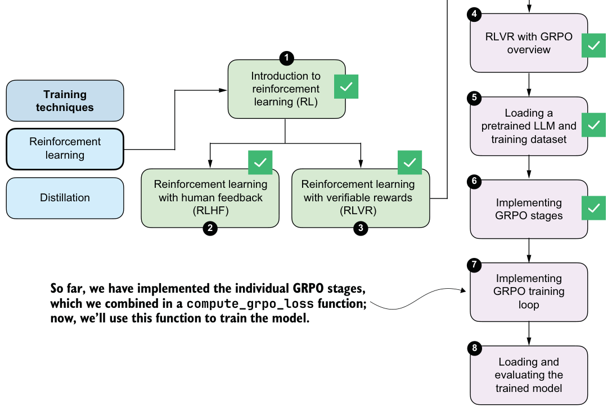
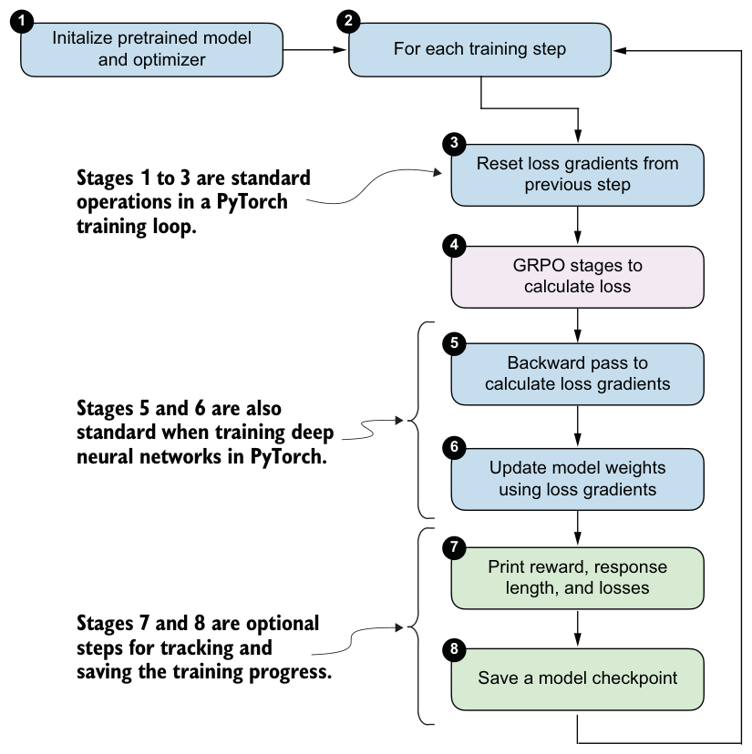

6.11Implementing the GRPO training loop
We now have all the necessary components in place to implement the full GRPO training loop. In this final section of the chapter, we’ll bring everything together to train the model via RLVR using the GRPO algorithm, as illustrated in figure 6.19.

The training loop consists of eight main stages, as shown in figure 6.20. Most of these stages are standard components of a typical PyTorch training loop for deep neural networks, including LLMs. The only stage specific to reasoning models is stage 4, where we compute the GRPO loss rather than the standard classification loss used in many other types of deep neural networks and in LLM pretraining.

Before discussing the eight stages one by one, it’s helpful to first see how they are implemented in code. Listing 6.16 shows the full training loop illustrated in figure 6.20.
import time
def train_rlvr_grpo(
model,
tokenizer,
math_data,
device,
steps=None,
num_rollouts=2,
max_new_tokens=256,
temperature=0.8,
top_p=0.9,
lr=1e-5,
checkpoint_every=50,
checkpoint_dir=".",
csv_log_path=None,
):
if steps is None:
steps = len(math_data)
optimizer = torch.optim.AdamW(model.parameters(), lr=lr)
model.train()
current_step = 0
if csv_log_path is None:
timestamp = time.strftime("%Y%m%d_%H%M%S")
csv_log_path = f"train_rlvr_grpo_metrics_{timestamp}.csv"
csv_log_path = Path(csv_log_path)
try:
for step in range(steps):
optimizer.zero_grad()
current_step = step + 1
example = math_data[step % len(math_data)]
stats = compute_grpo_loss(
model=model,
tokenizer=tokenizer,
example=example,
device=device,
num_rollouts=num_rollouts,
max_new_tokens=max_new_tokens,
temperature=temperature,
top_p=top_p,
)
stats["loss_tensor"].backward()
torch.nn.utils.clip_grad_norm_(model.parameters(), 1.0) optimizer.step() reward_avg = torch.tensor(stats["rewards"]).mean().item()
step_tokens = sum(
sample["gen_len"] for sample in stats["samples"]
)
avg_response_len = (
step_tokens / len(stats["samples"]) if stats["samples"] else 0.0
)
append_csv_metrics(
csv_log_path, current_step, steps,
stats["loss"], reward_avg, avg_response_len,
)
print(
f"[Step {current_step}/{steps}] "
f"loss={stats['loss']:.4f} "
f"reward_avg={reward_avg:.3f} "
f"avg_resp_len={avg_response_len:.1f}"
) if checkpoint_every and current_step % checkpoint_every == 0:
ckpt_path = save_checkpoint(
model=model,
checkpoint_dir=checkpoint_dir,
step=current_step,
)
print(f"Saved checkpoint to {ckpt_path}") except KeyboardInterrupt:
ckpt_path = save_checkpoint(
model=model,
checkpoint_dir=checkpoint_dir,
step=max(1, current_step),
suffix="interrupt",
)
print(f"\nKeyboardInterrupt. Saved checkpoint to {ckpt_path}")
return model
return modeldef save_checkpoint(model, checkpoint_dir, step, suffix=""):
checkpoint_dir = Path(checkpoint_dir)
checkpoint_dir.mkdir(parents=True, exist_ok=True)
suffix = f"-{suffix}" if suffix else ""
ckpt_path = (
checkpoint_dir /
f"qwen3-0.6B-rlvr-grpo-step{step:05d}{suffix}.pth"
)
torch.save(model.state_dict(), ckpt_path)
return ckpt_pathdef append_csv_metrics(
csv_log_path, step_idx, total_steps,
loss, reward_avg, avg_response_len,
):
if not csv_log_path.exists():
csv_log_path.write_text(
"step,total_steps,loss,reward_avg,avg_response_len\n",
encoding="utf-8",
)
with csv_log_path.open("a", encoding="utf-8") as f:
f.write(
f"{step_idx},{total_steps},{loss:.6f},{reward_avg:.6f},"
f"{avg_response_len:.6f}\n"
)This function implements the full RLVR training loop using GRPO. As mentioned earlier, except for stage 4 (the GRPO loss computation), the structure mirrors a conventional PyTorch training loop where we reset gradients, backpropagate a loss, optionally clip gradients, update parameters via an optimizer step, log metrics, and periodically save checkpoints. (We save the model checkpoints, which are snapshots of the model weights, so we can load, evaluate, and use them later, as we’ll discuss in the next section.)
The key difference here, compared with other standard training loops, is how the loss is constructed. Instead of a standard supervised objective, which is used for most neural networks, including classifiers and for pretraining LLMs, the training signal is computed via the GRPO algorithm as part of the RLVR procedure.
Let’s now run the code and train the model. Earlier, we hardcoded the PyTorch device to "cpu" so that all intermediate results closely match those shown in the book, since "mps" and "cuda" devices can introduce small floating-point differences. Training on a CPU is very slow, though.
For convenience, the following listing includes two lines that automatically select and activate the appropriate device before the train_rlvr_grpo() function call. For instance, it will automatically switch to "cuda" or "mps" simply by running the code in the following listing.
device = get_device()
model.to(device)
torch.manual_seed(0)
train_rlvr_grpo(
model=model,
tokenizer=tokenizer,
math_data=math_train,
device=device,
steps=50,
num_rollouts=4,
max_new_tokens=512,
temperature=0.8,
top_p=0.9,
lr=1e-5,
checkpoint_every=5,
checkpoint_dir=".",
)Let’s briefly talk about these settings before we inspect the results. The temperature and top_p settings were set within a common range that encourages some diversity in the answers while still producing coherent text for this model. You can change these settings and see how they affect the results (commonly used ranges are 0.7-0.9).
The number of steps is relatively small, at 50, even though the dataset contains 12,000 entries. This is simply to keep the runtime reasonable, and it can be increased. Even with 50 steps, though, it is sufficient for good results.
The learning rate (lr) can be tweaked, but it is in a reasonable range and works well.
The number of rollouts (num_rollouts=4) and allowed tokens (max_new_tokens=512) are relatively small to reduce resource requirements. If you experience out-of-memory errors, you can further reduce these values, such as by setting num_rollouts=2 and max_ new_tokens=64, for testing purposes.
With the current checkpoint_every=5 setting, the model is saved every 5 steps, and each checkpoint requires approximately 1.5 GB of disk space. For longer runs, I recommend setting this number to 50 or 100. Here, it is purposefully small for testing. Also note that an additional checkpoint should be created if the training run is manually interrupted, such as by interrupting the Jupyter notebook execution with the
"Interrupt the kernel" button.Let’s take a brief look at the run’s output (where I interrupted the 50-step run at step 7):
Using Apple Silicon GPU (MPS)
[Step 1/50] loss=-0.0000 reward_avg=0.000 avg_resp_len=88.0
[Step 2/50] loss=-0.0000 reward_avg=0.000 avg_resp_len=7.5
[Step 3/50] loss=-0.0000 reward_avg=0.000 avg_resp_len=6.5
[Step 4/50] loss=0.0909 reward_avg=0.250 avg_resp_len=6.5
[Step 5/50] loss=1.1001 reward_avg=0.500 avg_resp_len=300.5
Saved checkpoint to qwen3-0.6B-rlvr-grpo-step00005.pth
KeyboardInterrupt. Saved checkpoint to qwen3-0.6B-rlvr-grpo-step00006-interrupt.pthYou can see that both the loss and reward values fluctuate, which is normal in RL training.
We’ve printed the average reward, which indicates the proportion of sampled responses that are correct. With our num_rollouts=4 setting, a reward_avg of 0.5 means that 2 of the 4 rollouts received a positive reward. Similarly, values of 0.25 and 0.0 indicate one or zero correct responses, respectively.